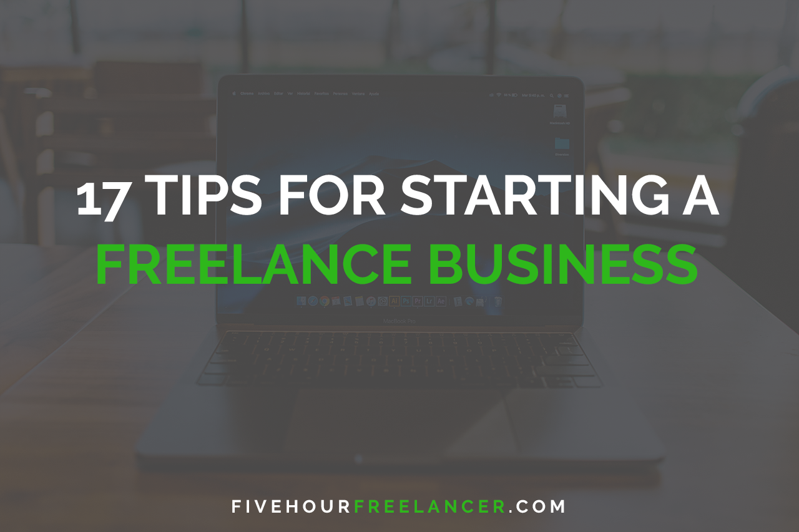

When considering starting a freelance business, there is endless potential as to what you could do. The demand for freelancers is still going up as the world progresses into life with the internet. Whether you are building a freelance business around the skills you already have, or are learning a new craft, someone out there wants to pay you for your service. To help you in your journey, here are 17 tips to consider when starting a freelance business.
Building a brand for your freelancing is the most important thing you can do for you business. Sticking to a brand builds reputation which is a major factor in the buying process of your consumer. Before you start to pick out your branding colors and logos, you will want to know who you target customers are. When creating your brand, remember that potential clients will have no context as to who you are or what you’ve previously accomplished. All they will see are the things you show off on your website or social media. So be sure that you don’t only have a good portfolio, but that you have a portfolio that shows off what you are best at.
You can’t sell to everyone so make it easy on yourself by knowing exactly who your customers are. The way you do this is by deciding to sell to a certain niche. Things like landscapers, painters, auto shops, ecommerce stores, blogs, whatever you feel most comfortable with. Try to pick what already comes natural to you. For example, if you worked in the food industry, focus your freelancing around local restaurants in your city. When you pick an industry that you have prior knowledge of, it will make this entire process easier.
To be a successful freelancer, you need to understand marketing and be familiar with the current and most popular marketing platforms. In simple terms, marketing is stealing people’s attention. It is the act of bringing a potential consumer to pay attention to your brand or products. To market to someone, you have to borrow their attention. The best marketing is content that your consumers actually wants to consume. To really be successful as a freelancer, you need to understand Search Engine Optimization, Search Engine Marketing, and how to prospect with potential clients using LinkedIn.
Build your brand and branded content that your ideal customers wants to consume.. Once you know who your ideal customer is, find out what they spend their time looking at. What content do they already consume? Depending on the demographics of you customers, you will need to advertise where your customers are already looking. Whether that is looking at Facebook, YouTube, Twitter, LinkedIn or even good ole’ TV.
Once you learn to get you brand in front of a potential customer, you need to build trust before they will even consider buying. You do this by providing value for the person consuming the content. If your niche is landscaping, make content that helps landscapers with their business. An example of this could be writing a well optimized article about “How to get more Landscape Clients in 2019” and posting it on a well established content platform like medium.com. Somewhere towards the end of the article (after you have already given something valuable to be reader), you can briefly talk about your brand and link back to your site.
When you are first starting out, practice what you sell by offering services for free to consumers in your target industry. Doing this will make you better at what you are doing, and also can lead to income later on. When you are offering certain services for free, you need to do so with good intent. Don’t do something with the only intent to make money from it. Your intentions should be to provide a great service for a client as a learning experience. The best thing you can do for your new business is to provide quality work for potential clients in your industry without expecting anything in return. This will build a reputation for you and your service that is will become unstoppable.
There are a lot of freelancers out there that will say to “never work for free as a freelancer”. The funny thing about that is most of them are also desperate for work. If you are already getting paid then of course don’t take time away from that to do free work. The point of working for free is to build up awareness around your brand and show potential customers what you can do for them. Once you provide services for free that someone is happy with, you can create content around that. A case study about how you made a new website for the local church can be posted as a press release on popular local news sites in your area which can lead to a lot of leads for your business.
If your business is providing multiple services then you can often turn free work into a paying customer. For example: if you provide web design and SEO services... you can first build a website for free. Then if they are satisfied you can offer a monthly retainer to add content to the website and SEO services. This service acn easily be $500-$1000 monthly service fee. Wouldn’t that make the 4 hours you spent making a free website worth it? When you are providing real value for a potential client for free, don’t be afraid to ask them for actual business. The worst they can say is no.
When you are first starting your business, you need to be self aware. You either have time or money. When you are creating your marketing strategy, know if you have money to spend or time to spend. If you have a limited budget to spend on your business, your best bet is to spend the dollars on actual marketing spend. You don’t need to spend money on consulting, software, or whatever else will “make you more money”. When you’re first starting out, putting in the time to learn how to run your business is crucial but it also costs money to live. Be practical when determining whether you have time or money on your side.
You need to know how to price yourself as a freelancer. It’s best to make it as easy as possible for consumers to buy your services by having the pricing easily organized. A good way to go about that is to have set pricing packages labeled on your website. However you create your pricing package, you just don’t want to take the case by case pricing model where you create a price on the spot for a customer. Know what your services are worth and charge accordingly. Make sure to weigh the market demand when building out your pricing structure. If you are a new web designer, you won’t be able to charge $10k for a website because that market is too saturated. Although if you are a block chain developer… there is way more demand than supply meaning you can dramatically increase your rates.
The point of what you are doing is to make a lasting business, so don’t mess that up by doing bad work for people. People want what other people like and that is the same in business. If you are in a situation where you are forced to not deliver on what was promised, you need to be honest about it. Constant communication between you and your clients is crucial in maintaining a healthy freelancing reputation. If something isn’t going right, you need to deal with it then and keep everyone updated. Don’t let problems between you and a client dwell. It will cause you to slack during the work which could hurt your reputation. No matter how obnoxious a client may be, you should always provide a good service for them. If you provide a bad service for people, it ultimately tears down your business.
As a freelancer that likes to build value upfront, it can be easy to get taken advantage of. The value of giving away some of your time is that you are building a long term reputation for yourself. But it also makes people think that you are easy to get one over on. Don’t let people take advantage of your willingness to help. If a client keeps wanting you to work over the agreed time, or is always making you do extra tasks, or continues to want to “talk with you about concerns” or whatever else… don’t let it continue too long and take up your time. Your time is valuable and you have to know when to put your foot down. Every hour you spend working for a difficult client is time you could be spending working for an easy client.
This business is only a business with sales. Understanding the sales process is crucial to making your business successful. Like previously mentioned, you need to know your target industry. When you know who you are selling to you need to know how to gain their trust. You can do this by first grabbing their intention, and then creating value to them. Once you have proven yourself and you skills, you need to go for the sale. Sales is a just a conversation. Be normal when making a sales pitch to a potential client. Confidence is what sells and you do that by first trusting in your own abilities, but more importantly just not caring about the outcome. Sales is a numbers game. You can only get so many no’s before someone says yes. Whether it takes 200 no’s or 2 no’s to get a yes, someone will eventually say yes. But it being 200 or 2 is determined by how established your brand is and how detailed your marketing is. Don't let a "no" make you feel like a failure. Every "no" is one step closer to a "yes".
Organization is what will make or break your business. You must be organized with your time, tasks, and customer relations for your business to continuously grow.. To help track your current and potential clients, take advantage of Hubspot’s free CRM. They offer a free software that helps you manage your contacts and tracks when you interact with each contact. This can be the backbone of your marketing effort. They offer paid plans that can help you automate your marketing and sales process. To keep track of your time and tasks, check out monday.com. It is a life changing software that helps automate and organize your daily tasks and operations so that you can spend less time on tedious tasks.
Automation is the new wave for freelancers. With the advanced software that is available today, you can automate your marketing, client relations, bookings, invoicing, and even more which frees you up to work more on what you actually enjoy. Don’t work in your business, work on your business. The best way for you to enjoy freelancing is to have a business that you can step away from at anytime. The beauty in freelancing is that you get to be FREE. But freelancers often lose sight of this when getting so overwhelmed with things like client emails or reporting. To help take the busy work off of your hands, it is good to bring on a virtual assistant that can help with your tedious tasks. Virtual assistants from the Philippines start at around $1.67/hr and can take on all of the office tasks that you hate doing.
Outsourcing certain tasks or even entire services is what almost every agency is doing. But as a freelancer it can hurt your brand to outsource everything. Outsourcing is very effective when scaling your business but can lead to problems if you outsource too much or too quickly. Always look over what you are outsourcing to ensure that the work you are putting out is positively reflecting your brand. As a freelancer, if you outsource work that ends up being terrible, you are the one providing the terrible work. You don’t have to display that your services are outsourced, but you need to not let your quality of work decline just to save you time. In the long term, this will just hurt your business.
And finally, you need to make sure you are having fun. Stay to true to why you started freelancing in the first place. To get paid doing something you actually enjoy. As you dedicate your life to growing your freelance business, it can be easy to get overwhelmed with wanting more clients and end up in a situation where you hate what you do. Don’t overwhelm yourself with so much work that you begin to resent the work that you do. Make sure you are dedicating your time to something that you enjoy, because that is what freelancing is all about.